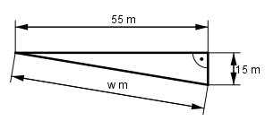

Pythagoras Aufgabe 12 Bei einem Wettkampf wird ein Ball so geworfen, dass er 15 m neben der 55 m Marke auftrifft. Wie groß war die Wurfweite w in m tatsächlich?  w2 = 152 m2 + 552 m2 = 3 250 m2 |√ w = 3 250m2 = 57 m
Pythagoras Aufgabe 12 Bei einem Wettkampf wird ein Ball so geworfen, dass er 15 m neben der 55 m Marke auftrifft. Wie groß war die Wurfweite w in m tatsächlich?
